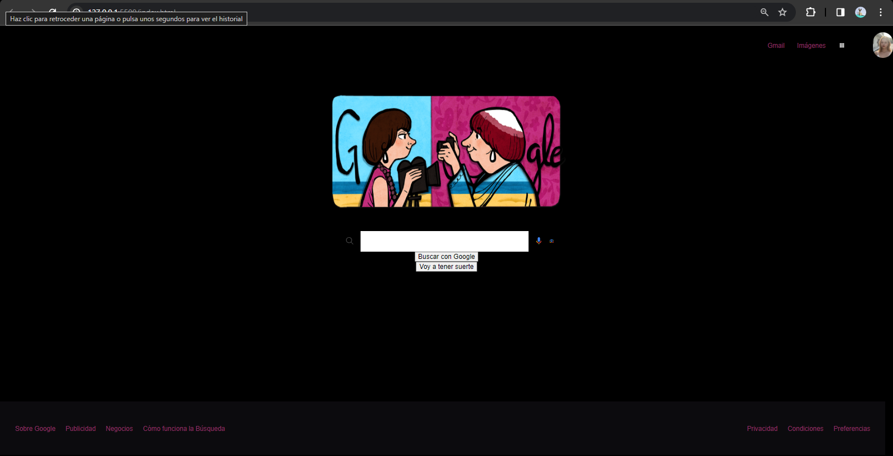
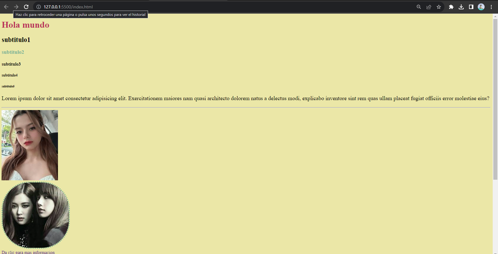
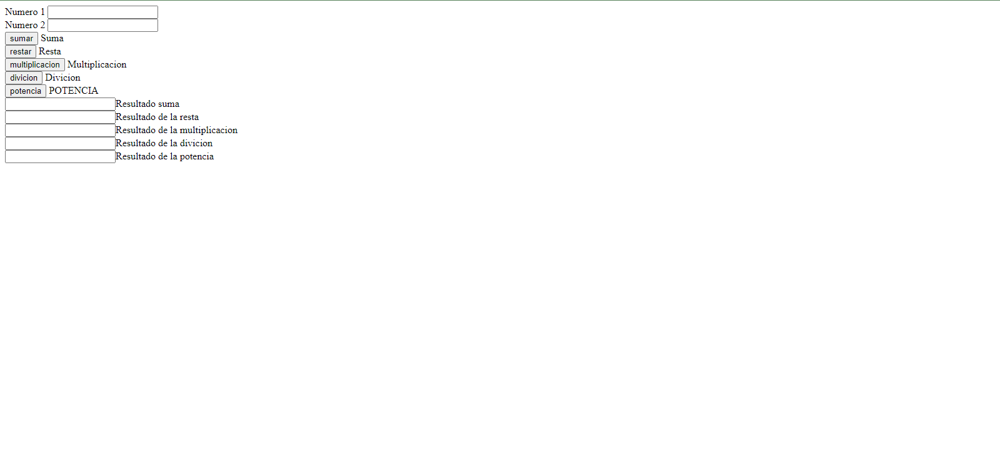

Hola, soy Jocelyn Guzman Garcia

Soy estudiente universitaria en la carrera de Ingenieria en Mantenimiento Industrial, voy al comienzo de mi carrera por lo que estoy muy emocionada por lo que pueda suceder a lo largo de la carrera, anteriormente llevaba programacion y para mi es muy emocionante por que asi puedo clomplementar lo aprendido y aprender cosas nuevas, tengo como objetivos incrementar mi conocimiento en las Tecnologias de la Informacion y poder comprenderla mejor.
Desarrollo Web Desde que inicie la preparatpria lleve lo que es la programacion creando paginas web,bases de datos y codigo completamente funcinales y es por lo mismo que cuando tengo la oportunidad no las desaprobecho para incrementar mis conocimientos. Aprendisajes Tengo la facilidad de aprender, y soy muy cumplida con las cosas que se realizan, no soy tan profesional al crear codigos o paginas web, pero se me facilita mas la creacion de paginas Estudiante Soy estudiante de universidad cursando mi titulo tecnico en Mantenimiento Industrial que se basa en dar mantenimiento a maquinaria de cualquier tipo de empresa, tomando un poco de todo ejemplo electricidad y magnetismo, Termodinamica, maquinaria electricas y termicas. Eh sido testigo de como va Jocelyn Guzmán es una estudiante excepcional que ha demostrado un compromiso y dedicación impresionantes en su trayectoria académica. Desde el principio, ha destacado por su habilidad para comprender y aplicar conceptos complejos en el campo de los sistemas.Con una curiosidad insaciable y una actitud de aprendizaje constantemente. Diego Mentor de sistemas Muestra un rápido progreso en la adquisición de habilidades técnicas clave y una gran disposición para colaborar en proyectos. Su actitud positiva y su voluntad de aprender constantemente son cualidades valiosas en el campo de la programación. No tengo dudas de que [Nombre ] seguirá creciendo y haciendo contribuciones significativas como desarrolladora frontend en el futuro. Anel Mentora Anel Tecnolochicas Jocelyn tiene una habilidad innata para comprender y aplicar conceptos complejos de los sistemas. Su enfoque analítico y su capacidad para resolver problemas con elegancia son dignos de elogio. Siempre está dispuesta a colaborar con sus compañeros y a compartir sus ideas de manera clara y concisa. Su diligencia y perseverancia para superar desafíos demuestran su dedicación al dominio de los sistemas Rebecca Mentora de programacion avansado
HTML
CSS
JavaScript
Php
Escribir
Editar
Paginas web
Tecnolochicas PRO
Desarrollo Web
Bases de datos
Mis proyectos
Estos son algunos proyectos recientes



Testimonios
Estos son algunos testimonios de mis mentores